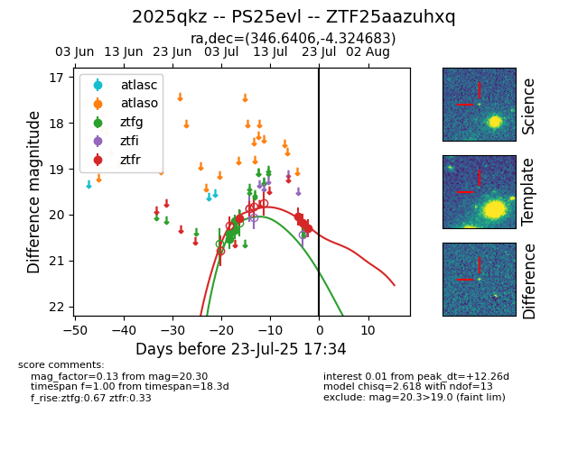

Target ZTF25aazuhxq at 2025-07-23 17:34, see:
FINK: fink-portal.org/ZTF25aazuhxq
Lasair: lasair-ztf.lsst.ac.uk/objects/ZTF25aazuhxq
ALeRCE: alerce.online/object/ZTF25aazuhxq
TNS: wis-tns.org/object/2025qkz
YSE: ziggy.ucolick.org/yse/transient_detail/2025qkz
alt names
ZTF25aazuhxq (ztf,fink)
2025qkz (tns,yse)
PS25evl (panstarrs)
coordinates:
equatorial (ra, dec) = (346.6406,-4.32468)
galactic (l, b) = (70.6564,-56.15337)
photometry
last ztfg=20.33, ztfr=20.30
4 ztfg, 4 ztfr detections
